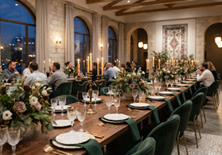
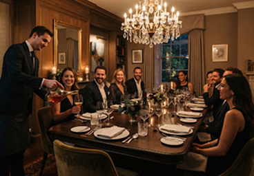
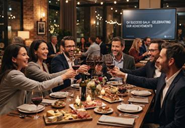
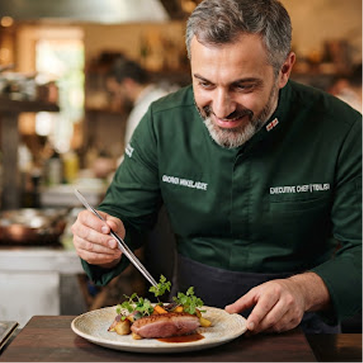
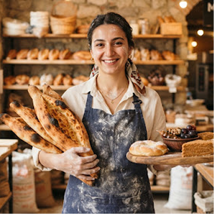
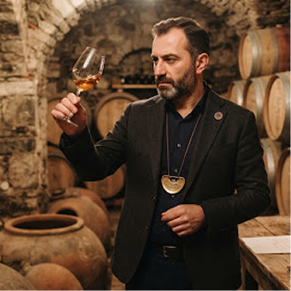

ექსკლუზიური მასპინძლობა
ჩვენი სერვისები & ღონისძიებები
გემოვანი გთავაზობთ მაღალი დონის გასტრონომიულ გამოცდილებას, ინდივიდუალურ მიდგომასა
და ქართული
სტუმართმოყვარეობის გამორჩეულ ესთეტიკას თქვენი განსაკუთრებული დღეებისთვის.
200+ ეტიკეტი
ქართული ღვინო

დიდი ზეიმი
₾110-დან / პერსონა
საბანკეტო დარბაზი
დახვეწილი სივრცე ქორწილების, საიუბილეო წვეულებებისა და მასშტაბური შეკრებებისთვის. ინდივიდუალური
სუფრის დიზაინი, თანამედროვე აკუსტიკური სისტემა და პროფესიონალური მომსახურება.
ავთენტური ქართული & ევროპული სეტ-მენიუ
პერსონალური სომელიე და მუსიკალური აპარატურა
ფლორისტული და სადღესასწაულო დეკორაცია
დაჯავშნე სერვისი

პრივატული გამოცდილება
₾160-დან / პერსონა
კერძო VIP ვახშამი
განმარტოებული, პრემიუმ კლასის ოთახი დახურული საქმიანი მოლაპარაკებებისა თუ ოჯახური სადილისთვის.
ინდივიდუალური მიმტანი და შეფ-მზარეულის სპეც-მენიუ.
შეფის მიერ შედგენილი 5-კურსიანი სადილი
სრული კონფიდენციალურობა & ცალკე მოსასვენებელი სივრცე
იშვიათი რეზერვის ღვინოების ექსკლუზიური ბარათი
დაჯავშნე სერვისი

ბიზნეს ფორმატი
₾95-დან / პერსონა
კორპორატიული საღამოები
კომპანიის საიუბილეო, გუნდური შეკრებებისა და წლის შემაჯამებელი წვეულებების ორგანიზება. მოქნილი
პაკეტები, ტექნიკური მხარდაჭერა და უნაკლო სერვისი.
საპრეზენტაციო ეკრანები და უკაბელო მიკროფონები
საბანკო გადარიცხვისა და ანგარიშსწორების სრული დოკუმენტაცია
გუნდური კულინარიული მასტერკლასების ინტეგრაცია
დაჯავშნე სერვისი
როგორ ვმუშაობთ
დაგეგმვის 4 მარტივი ნაბიჯი
ჩვენ ვზრუნავთ თითოეულ დეტალზე, რათა თქვენ მხოლოდ საზეიმო განწყობით დატკბეთ.
01
კონსულტაცია & იდეა
გვიზიარებთ თქვენს ხედვას, სტუმრების რაოდენობას, ფორმატსა და თარიღს.
15 წუთი
02
მენიუს შედგენა
შეფი შეარჩევს კერძებს, სომელიე კი იდეალურად შეუხამებს ღვინის პაკეტს.
ინდივიდუალური
03
დეგუსტაცია & ჯავშანი
დიდი ღონისძიებებისთვის შესაძლებელია წინასწარი დეგუსტაცია და დარბაზის შერჩევა.
გარანტირებული ხარისხი
04
უნაკლო მასპინძლობა
ჩვენი მენეჯერი და პერსონალი ადგილზე სრულად უძღვებიან ღონისძიების მიმდინარეობას.
სრული კომფორტი 
გემოვანი • ესთეტიკა და გემო
ჩვენი ისტორია და ფილოსოფია
საუკუნოვანი ქართული კულინარიული საგანძურის ხელახალი გააზრება. ტრადიციული ოჯახური სითბო,
გადააზრებული თანამედროვე გასტრონომიული ოსტატობით.
დროში გამოცდილი რეცეპტები, შექმნილი უსაზღვრო სიყვარულით
რესტორანი „გემოვანი“ დაარსდა ერთი სანუკვარი იდეით: შეგვენარჩუნებინა მივიწყებული კუთხური გემოები და
ისინი მსოფლიო რანგის დახვეწილობით მიგვეტანა სტუმრამდე. ჩვენთან სუფრა არ არის უბრალოდ ტრაპეზი, ეს
არის ზიარება ქართულ ხელოვნებასთან, სტუმართმოყვარეობასთან და ნამდვილ გულწრფელობასთან.
2013
პირველი კერა თბილისის ძველ უბანში
პატარა, 6-მაგიდიანი სასადილო ოჯახური რეცეპტებითა და კახური ქვევრის ღვინით, სადაც პირველივე
დღიდან ცოცხალი მუსიკა და მეგობრული დიალოგები ისმოდა.
2018
ექსპედიცია მთიან რეგიონებში
ჩვენმა შეფ-მზარეულებმა სვანეთში, ხევსურეთსა და რაჭაში შეაგროვეს უნიკალური სანელებლებისა და
შებოლილი ხორცის უძველესი მეთოდები.
2024
„გემოვანის“ ახალი ერა
გახსნა რუსთაველის გამზირზე – უმაღლესი დონის ავთენტური სივრცე მარნით, საბანკეტო დარბაზითა და
ექსკლუზიური გასტრო-ტურებით.
გემოვანი ბლოგი — კულინარიული სიახლეები და რეცეპტები
აღმოაჩინეთ ქართული სამზარეულოს მრავალსაუკუნოვანი საიდუმლოებები, ავთენტური რეცეპტები, მეღვინეობის
ხელოვნება და ჩვენი შეფ-მზარეულების სეზონური ექსპერიმენტები.
კულინარიული ფილოსოფია
5 წთ კითხვა
ქართული სუფრის ფენომენი: როგორ აერთიანებს გემო, სადღეგრძელო და რიტუალი თაობებს
სუფრა საქართველოში მხოლოდ საკვების მიღება არ არის — ეს არის ცოცხალი თეატრი,
მრავალხმიანი საუბარი და სტუმრის ღვთიურ მოვლენად აღქმის უძველესი რიტუალი. შეფ დავით კვირიკაშვილი
გვიზიარებს 'გემოვანის' ხედვას თანამედროვე ქართული სტუმართმოყვარეობის შესახებ.
დავით კვირიკაშვილი
მთავარი შეფ-მზარეული • 14 აპრილი, 2025
გუნდი
ჩვენი შეფ-მზარეულები და ოსტატები
ადამიანები, რომლებიც თითოეულ ულუფას ხელოვნების ნიმუშად აქცევენ და დაუვიწყარ გემოვნურ
თავგადასავალს გჩუქნიან.

მთავარი შეფი
ლევან გიორგაძე
აღმასრულებელი შეფ-მზარეული
18-წლიანი საერთაშორისო გამოცდილება ლიონსა და თბილისში. მის ხელწერას ახასიათებს
ტრადიციული საწებლებისა და თანამედროვე ტექსტურების ჰარმონია.

დესერტის ოსტატი
ნინო მაისურაძე
მთავარი კონდიტერი & მეპურე
ძირძველი რაჭული და გურული ნუგბარის მცველი. ნინო ქმნის ჩვენს საავტორო დესერტებს
ნატურალური თაფლით, ნიგვზითა და ბადაგით.

მთავარი სომელიე
დავით ჩხეიძე
ღვინის ექსპერტი & სომელიე
ბუნებრივი და ქვევრის ღვინოების მკვლევარი. დავითი პირადად არჩევს თითოეულ ბოთლს
მცირე საოჯახო მარნებიდან ჩვენი მენიუს სრულყოფილი წყვილებისთვის.